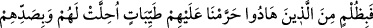
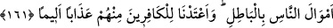

Âyet, onlar için bir tehdit ve mecbur olmadan Hz. Îsâ’ya îman etmeleri için bir
teşviktir. Çünkü, son anda îman etmelerinin onlara bir faydası olmayacaktır.
Âyetteki zamirlerin, Îsâ (a.s.)’a âit olduğu da söylenmiştir. O zaman âyetin mânâsı
şöyle olur: “Îsâ (a.s.)’ın nüzûlü zamanında hayatta olan ehl-i kitaptan her biri, onun
vefâtından önce kendisine îman edecektir.”
Nebi (a.s)’ın şöyle buyurduğu rivâyet edilmiştir: “İnsanların Îsâ’ya en yakın olanı
benim. Çünkü, benimle onun arasında başka bir nebî gelmemiştir. O yakında sizin
aranıza âdil bir hâkim olarak iner. Onu gördüğünüz zaman tanıyın ki o, orta boylu ve
kırmızıyı andırır beyaz tenlidir. Islanmamış olsa da başından su damlar. O, domuzları
öldürür, içkileri döker ve putları kırar. Kudüs’e gider ve kendi zamanında İslâm
dışındaki diğer dinlerin hepsi ortadan kalkıp yalnız âlemlerin Rabbi olan Allah’a
secde edilir olana kadar insanlarla İslâm olmaları için çarpışır. Allah, onun
zamanında yalancı Deccâl’i de helâk eder. Îsâ (a.s) yeryüzüne indiği zaman yaşayan
bütün ehl-i kitap ona îman edecektir. Onun zamânında emniyet olacaktır. Öyle ki
develer arslanlarla, sığırlar kaplanlarla, koyunlar kurtlarla berâber otlayacak
çocuklar yılanlarla oynayacaktır. Üstelik, bunlardan hiç biri diğerine zarar
vermeyecektir. O (Hz. Îsâ), dünyâda kırk yıl kalacak, sonra ölecek, müslümanlar onun
namazını kılacak ve defnedeceklerdir.”[204]
Yine hadiste şöyle buyurulmuştur: “Mesih, mutlaka gelecektir. Kim ona yetişirse
benim selâmımı söylesin.”[205]
“Kıyâmet gününde de o,” Îsâ (a.s.) “onların” yâni kitap ehlinin “aleyhine şâhit
olacaktır.” Yâhûdîlerin kendisini yalanladıklarına, hristiyanların ise kendisine
“Allah’ın oğlu” dediklerine şâhitlik edecektir.
160, 161- Yahûdîlerin zulmü sebebiyle, bir de çok kimseyi Allah yolundan
çevirmeleri, menedildikleri halde faizi almaları ve haksız (yollar) ile insanların
mallarını yemeleri yüzünden kendilerine (daha önce) helâl kılınmış bulunan temiz
ve iyi şeyleri onlara haram kıldık; ve içlerinden inkâra sapanlara acı bir azap
hazırladık.
“Yahûdîlerin” işledikleri akıl almaz derecede karışık ve çirkin “zulmü sebebiyle, bir
de çok kimseyi Allah yolundan” Allah’ın dîni olan İslam’dan “çevirmeleri” ya da
Allah’ın dinine girmekten insanları çokca alıkoymaları, “menedildikleri halde fâizi
almaları”, çünkü fâiz bize haram kılındığı gibi onlara da haram kılınmıştı. Bu ifâde